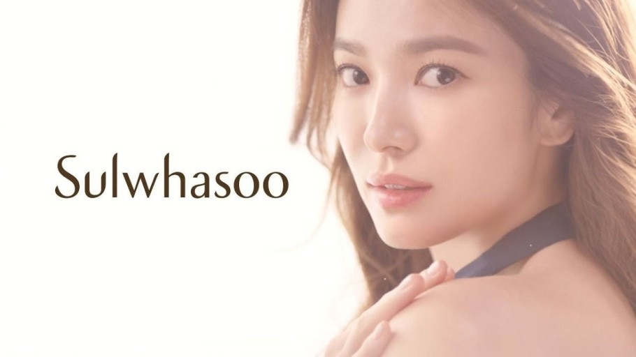

예전에는 이러한 마케팅이 도움이 되었습니다.
송혜교님이 설화수 제품을 사용하는 것처럼 나 또한 설화수 제품을 사용하면
송혜교님처럼 될 수 있지 않을까? 라는 상상을 하기 때문입니다.
하지만 현재는 절때 이런 생각을 하지 않습니다.
연예인들이 분명 화장품으로만 관리를 하는 것이 아니라는 것을 알게되었고 무엇보다 이를 쓴다고 송혜교님처럼 될 수 없다는 것을 알았기 때문입니다.
이러한 상황에서 과연 송혜교님을 계속 광고 모델로 쓴다고 설화수 입장에서 이득이 되는 것이 있을까요?
제가 보았을때는 설화수는 제품 쪽으로는 이미 자신이 있는 제품이기에 한번 쓰면 계속 설화수를 쓰게끔 만드는 힘이 있다고 생각합니다.
그래서 한번 모험을 해보는 것이 어떠냐고 제안하고 싶은데요.
나이키에서 아프리카에 진출할때 한 모험처럼 설화수도 이를 행하면 좋겠습니다.

저는 미스터트롯을 보지 않았기에 이렇게 인기가 많으신줄 몰랐는데
제가 수도권 4단계가 되기 전에 미스터트롯 콘서트 스텝으로 갔었습니다.
서울에서 진행하는 미스터트롯이었는데 저는 상황을 보고 매우 놀랐습니다.
어머님들이 과연 굿즈를 살까? 라는 생각을 하였는데 몇시간 동안 그 줄은 끊기지 않았고 특히 가장 많이 찾은 멤버는 임영웅님이었습니다.
이를 통해 어머님들도 현재 아이돌을 좋아하는 학생들처럼 돈을 아끼지 않는구나. 오히려 학생들 보다 금전적인 여유가 있기에 더 많이 제품을 구매한다는 것을 알게되었습니다.
만약 어머님들이 임영웅님 노래 외에 다른 제품을 구매하지 않으시다면 이와 같은 제안을 하지 않았겠죠.
그리고 어머님 뿐만 아니라 아버님도 임영웅님을 좋아하시는 분이 많으셨습니다.
가족 전체가 임영웅님을 좋아하는 것이었죠.
그러면 이를 설화수에 적용시켜 보면 어떨까요?
제 경험을 바탕으로 예를 들어보면
예전 네이처릭 퍼블릭에서 엑소가 모델이었을때가 있었습니다.
그때 정말 10대의 대부분은 그냥 엑소가 모델이라는 이유만으로 네이처릭 퍼블릭에서 제품을 구매하였고
나중에 엑소가 모델이 아닐때도 이미 그 제품에 익숙해져서 그 제품만을 구매하는 경우가 매우 많았습니다.
그럼 설화수는 어떨까요?
제품 성능에 매우 자신있는 곳이 설화수 아닌가요?
그럼 한번 사용해도 많은 분들이 다시 설화수를 찾게 될것입니다.
거기다 그냥 색조 화장품도 아닌 민감한 피부에 관한 내용이기에 더욱 설화수를 찾는 분들은 많아 질것입니다.
즉, 설화수의 가장 큰 포인트는 이 제품을 한번이라도 사용하게 만들자! 가 목표가 되야 한다는 것인데요.
설화수 제품을 가장 잘 홍보해 줄 수 있는 사람.
설화수 타겟층에 가장 인기가 많은 사람.
그 분이 바로 임영웅 님이었습니다.